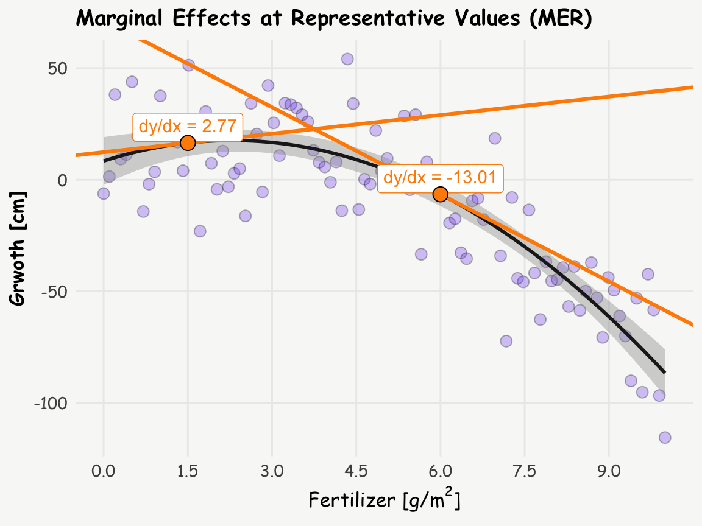
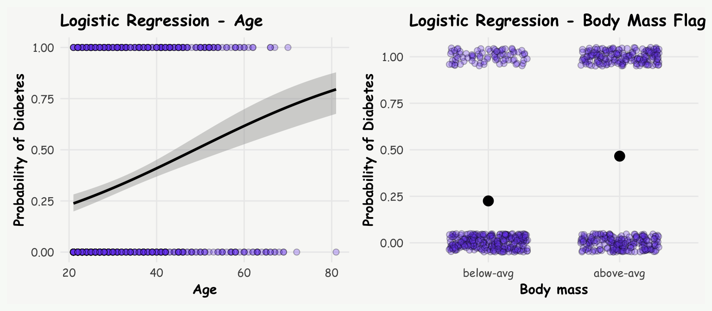

Raw parameter estimates from complex models, particularly those involving non-linear terms or interactions, are often challenging to interpret and may lack real-world context. This difficulty is especially pronounced for non-statisticians, who are often the ones tasked with translating results into practical solutions. In this regard, marginal effects can be useful, as they provide a clearer and more interpretable view of the relationships within a statistical model.
The term “marginal effects” carries slightly different meanings across different fields and contexts. For an in-depth exploration of this terminology, I recommend to read Andrew Heiss’s blog post. For the following, I’ll adhere to the following general concept: Marginal effects illustrate how a one-unit change in the independent variable influences the dependent variable, while holding other factors or covariates constant. This concept manifests differently across model types:
Linear Regression Models: Here, coefficients themselves already represent (constant) marginal effects, due to the linear nature of the relationship. For instance, in a model predicting salary based on years of experience, a coefficient of 500 for experience indicates that each additional year increases salary by 500 units.
Non-linear Models: In models such as logit, probit, Poisson, or those involving quadratic/ polynomial terms, marginal effects are not constant. They must be calculated for specific values of the independent variable. For example, in a logistic regression model predicting diabetes based on glucose levels, the marginal effect represents the change in the probability of diabetes occurring for a one-unit change in glucose level. It’s worth noting that in such models, the regression coefficient itself represents the log odds ratio rather than the change in actual probability.
In the following sections, I’ll explore two examples of how to enhance the interpretability of model outputs using marginal effects and the marginaleffects package.
Note I: While researching marginal effects, I found two particularly insightful blog posts - one by an unnamed author from the University of Virginia and another by Andrew Heiss. Both offer comprehensive descriptions of the concept. However, in this post, I’ve attempted to articulate the idea behind marginal effects in my own words, hoping to provide a perspective that might be helpful to others, including my future self.
Note II: There are several other excellent R packages for calculating marginal effects, such as margins and emmeans. However, for the sake of simplicity and consistency, I chose not to include them in this post.
Unraveling Curved Relationships: Marginal Effects Between Continuous Variables
When dealing with continuous variables for both predictors and outcomes, marginal effects become a powerful tool for interpretation of non-linear models like quadratic relationships, where raw regression estimates are challenging to interpret. Let’s explore this concept using the PimaIndiansDiabetes dataset, where we’ll examine the relationship between body mass and age. While this model is primarily for illustrative purposes and doesn’t seek deeper interpretation, it serves as a nice example of marginal effects in action.
Linear vs. Quadratic: Which Fits Better?
First, let’s compare a linear and a quadratic model to see which better describes the data:
R Code
# plotggplot(PimaIndiansDiabetes, aes(x = age, y = mass) ) +geom_point( color ='black', fill ='#7950f2', alpha =0.6, shape =21, size =3) +stat_smooth(method ="lm", formula = y ~ x, linewidth =1, color ='#1e1e1e') +scale_x_continuous(breaks =seq(20, 90, by=10)) +labs(title ='Linear Model',x ="Age", y ="Body Mass")# linear modellinear_model <-glm(mass ~ age, data = PimaIndiansDiabetes)summary(linear_model)
Call:
glm(formula = mass ~ age, data = PimaIndiansDiabetes)
Coefficients:
Estimate Std. Error t value Pr(>|t|)
(Intercept) 31.18493 0.85347 36.539 <2e-16 ***
age 0.02430 0.02421 1.004 0.316
---
Signif. codes: 0 '***' 0.001 '**' 0.01 '*' 0.05 '.' 0.1 ' ' 1
(Dispersion parameter for gaussian family taken to be 62.15938)
Null deviance: 47677 on 767 degrees of freedom
Residual deviance: 47614 on 766 degrees of freedom
AIC: 5355.1
Number of Fisher Scoring iterations: 2
R Code
# plotggplot(PimaIndiansDiabetes, aes(x = age, y = mass) ) +geom_point(fill ='#7950f2', alpha =0.5, shape =21, size =3) +stat_smooth(method ="lm", formula = y ~ x +I(x^2), linewidth =1.3, color ='#1e1e1e') +scale_x_continuous(breaks =seq(20, 90, by=10)) +labs(title ='Quadratic Model',x ="Age", y ="Body Mass")# quadratic modelquadratic_model <-glm(mass ~ age +I(age^2), data = PimaIndiansDiabetes)summary(quadratic_model)
Call:
glm(formula = mass ~ age + I(age^2), data = PimaIndiansDiabetes)
Coefficients:
Estimate Std. Error t value Pr(>|t|)
(Intercept) 16.311932 2.567317 6.354 3.61e-10 ***
age 0.866956 0.139589 6.211 8.65e-10 ***
I(age^2) -0.010569 0.001725 -6.125 1.45e-09 ***
---
Signif. codes: 0 '***' 0.001 '**' 0.01 '*' 0.05 '.' 0.1 ' ' 1
(Dispersion parameter for gaussian family taken to be 59.33079)
Null deviance: 47677 on 767 degrees of freedom
Residual deviance: 45388 on 765 degrees of freedom
AIC: 5320.3
Number of Fisher Scoring iterations: 2
The quadratic model shows a smaller residual deviance, indicating a better fit to the data. This suggests a more complex relationship between age and body mass: body mass tends to increase with age until around 45 years, after which it begins to decrease again.
Interpreting Quadratic Relationships: The Power of Marginal Effects
Interpreting the coefficients of a quadratic model can be challenging - so we have two coefficients age and I(age^2), one negative one positive - but how to interpret them? This is where marginal effects, specifically Marginal Effects at Representative Values (MER), come into play. We can calculate the slope (or tangent) at different ages to better understand the relationship, and these slopes are nothing else than marginal effects. Let’s calculate the marginal effects at ages 30 and 60 using the slopes() function from the marginaleffects package:
slopes(quadratic_model, newdata =datagrid(age =c(30, 60))) -> s; s
Term age Estimate Std. Error z Pr(>|z|) S 2.5 % 97.5 %
age 30 0.233 0.0414 5.62 <0.001 25.6 0.152 0.314
age 60 -0.401 0.0734 -5.47 <0.001 24.4 -0.545 -0.257
Columns: rowid, term, estimate, std.error, statistic, p.value, s.value, conf.low, conf.high, age, predicted_lo, predicted_hi, predicted, mass
Type: response
Now, let’s visualize these slopes on the plot from above (inspired by Andrew Heiss):
R Code
# y = 16.311932 + 0.866956*x + -0.010569(x^2) b_30 <- s$estimate[1]x_30 <-30y_30 <-16.311932+0.866956*30-0.010569*(30^2) intercept_30 <- b_30 * (-x_30) + y_30b_60 <- s$estimate[2]x_60 <-60y_60 <-16.311932+0.866956*60-0.010569*(60^2) intercept_60 <- b_60 * (-x_60) + y_60d.annot <-data.frame(x =c(x_30, x_60), y =c(y_30, y_60), b =c(b_30, b_60),i =c(intercept_30, intercept_60) ) %>%mutate(label =paste0('dy/dx = ' , round(b, 2)))ggplot(PimaIndiansDiabetes, aes(x = age, y = mass) ) +geom_point(fill ='#7950f2', alpha =0.3, shape =21, size =3) +stat_smooth(method ="lm", formula = y ~ x +I(x^2), linewidth =1, color ='#1e1e1e') +geom_abline(data = d.annot, aes(slope = b, intercept = i),linewidth =1.1, color ='darkorange') +geom_richtext(data = d.annot, aes(x = x, y = y, label = label), color ='darkorange', nudge_y =4) +geom_point(data = d.annot, aes(x = x, y = y), fill ='darkorange', shape =21, size =4) +scale_x_continuous(breaks =seq(20, 90, by=10)) +labs(title ='Marginal Effects at Representative Values (MER)',x ="Age", y ="Body Mass")
This visualization helps to understand how the relationship between age and body mass changes over time. The slope is positive at age 30 but negative at age 60, indicating a shift in the relationship.
Comprehensive View: Marginal Effects Across All Ages
To get a complete picture, we can calculate and plot the marginal effects (slopes) for all ages using the plot_slopes() function:
R Code
plot_slopes(quadratic_model, variables ="age", condition ="age") +geom_hline(yintercept =0, color ='darkgrey', linetype ='dotted', lwd =1) +geom_point(data = d.annot, aes(x = x, y = b), fill ='darkorange', shape =21, size =4) +geom_richtext(data = d.annot, aes(x = x, y = b, label = label), color ='darkorange', nudge_y =0.15) +scale_x_continuous(breaks =seq(20, 90, by=10)) +labs(title ='Marginal Effects Across All Ages',y ='Marginal Effect (dy/dx)', x ='Age')

Interpretation
The analysis reveals that:
At age 30, a one-year increase in age is associated with a 0.2 unit increase in body mass.
At age 60, a one-year increase in age is associated with a 0.4 unit decrease in body mass.
This shift from a positive to a negative relationship as age increases illustrates the non-linear nature of the association between age and body mass in the given dataset.
Beyond MER: Exploring MEM and AME
We’ve just looked at the concept of Marginal Effects at Representative Values (MER). But there’s more! Two other concepts can shed light on the data (depending on context and data, one or the other make more sense): MEM and AME. Let’s break these three down in more detail:
Marginal Effect at Representative Values (MER):
This represents the dy/dx at very specific, representative values of x (as for the age of 30 and 60 above).
Term age Estimate Std. Error z Pr(>|z|) S 2.5 % 97.5 %
age 30 0.233 0.0414 5.62 <0.001 25.6 0.152 0.314
age 60 -0.401 0.0734 -5.47 <0.001 24.4 -0.545 -0.257
Columns: rowid, term, estimate, std.error, statistic, p.value, s.value, conf.low, conf.high, age, predicted_lo, predicted_hi, predicted, mass
Type: response
Marginal Effect at the Mean (MEM):
This represents the dy/dx at the mean value of x (age in the example above).
slopes(quadratic_model, newdata ="mean")
Term Estimate Std. Error z Pr(>|z|) S 2.5 % 97.5 %
age 0.164 0.0329 4.99 <0.001 20.7 0.0998 0.229
Columns: rowid, term, estimate, std.error, statistic, p.value, s.value, conf.low, conf.high, predicted_lo, predicted_hi, predicted, age, mass
Type: response
Average Marginal Effect (AME):
This is the mean of all observation-specific marginal effects. It’s calculated by determining dy/dx at each value of x and then taking the average. Based on the example above, this might not be very helpful though.
avg_slopes(quadratic_model)
Term Contrast Estimate Std. Error z Pr(>|z|) S 2.5 % 97.5 %
age mean(dY/dX) 0.164 0.0329 5 <0.001 20.7 0.0999 0.229
Columns: term, contrast, estimate, std.error, statistic, p.value, s.value, conf.low, conf.high, predicted_lo, predicted_hi, predicted
Type: response
Unravelling Logistic Regression and Marginal Effects
Logistic regression is a powerful and often used tool. The raw parameters represent log odds ratios, expressed as \(log(\frac{p}{1-p})\). Exponentiating these coefficients results in odds ratios \(\frac{p}{1-p}\), which is a common measure used in scientific studies. But what do these really mean in practical terms? The interpretation can be tricky, and it’s easy to conflate odds with probabilities. While it would be convenient if they were the same, they’re not – and this is where marginal effects shine.
Let’s explore this concept using the PimaIndiansDiabetes dataset again. We’ll investigate how age and above-average body mass (binary coded) relate to the risk of diabetes. Again, this example is simplified for illustration, and is simply used to provide insights into marginal effects in case of a binary coded outcome variable.
# plot: agep1 <-ggplot(PimaIndiansDiabetes, aes(x = age, y = diab)) +geom_point(fill ='#7950f2', alpha =0.3, shape =21, size =2) +stat_smooth(method="glm", color="black", se=TRUE, method.args =list(family=binomial), linewidth =1) +labs(title ='Logistic Regression - Age',y ='Probability of Diabetes', x ='Age') +theme(axis.text =element_text(size =9),axis.title =element_text(size =11))# plot: body mass binary codedp2 <-ggplot(PimaIndiansDiabetes, aes(x = mass_fg, y = diab)) +geom_jitter(width =0.3, height =0.05, fill ='#7950f2', alpha =0.3, shape =21, size =2) +stat_summary(fun = mean, geom ="point", size =3.5, color ="black") +geom_smooth(method ="glm", method.args =list(family ="binomial"), se =FALSE) +labs(x ="Body mass", y ="Probability of Diabetes", title ="Logistic Regression - Body Mass Flag") +theme(axis.text =element_text(size =9),axis.title =element_text(size =11))p1+p2+plot_annotation(theme =theme(plot.background =element_rect(fill ="#f8faf7", color="#f8faf7")))# logistic regressionlogit_model <-glm(diabetes ~ age + mass_fg, data = PimaIndiansDiabetes, family ='binomial')summary(logit_model)

Call:
glm(formula = diabetes ~ age + mass_fg, family = "binomial",
data = PimaIndiansDiabetes)
Coefficients:
Estimate Std. Error z value Pr(>|z|)
(Intercept) -2.676442 0.272066 -9.837 < 2e-16 ***
age 0.042212 0.006757 6.247 4.18e-10 ***
mass_fgabove-avg 1.105120 0.164923 6.701 2.07e-11 ***
---
Signif. codes: 0 '***' 0.001 '**' 0.01 '*' 0.05 '.' 0.1 ' ' 1
(Dispersion parameter for binomial family taken to be 1)
Null deviance: 993.48 on 767 degrees of freedom
Residual deviance: 903.32 on 765 degrees of freedom
AIC: 909.32
Number of Fisher Scoring iterations: 4
Lets look at the odds ratios:
exp(logit_model$coefficients)
(Intercept) age mass_fgabove-avg
0.06880757 1.04311523 3.01958756
Traditional interpretation:
For each year increase in age, the odds of having diabetes increase by 4%.
Individuals with above-average body mass have odds of diabetes 3 times higher than those with below-average body mass.
While these interpretations are technically correct, they’re not very intuitive. Many people, including myself, find odds ratios difficult to grasp and often conflate them with probabilities.
Therefore lets look at marginal effects, which offer a more accessible way to interpret our results. They show how changes in our predictors affect the probability (not odds!) of the outcome. First thing we could do, is to get individual risk differences: predict the probability of diabetes for a given subject based on their current age, and the probability for one year older (+1), and calculate the difference between the two. Analogously for the binary variable, predict the probability of diabetes for each subject, once treating the subject to be above average massed, and once below averaged massed, and take the difference thereof. We could do this by hand, but the comparisons() function from the marginaleffects does this for us (which is the analogue function to slopes() for the continuous relationship from above).
The outputs of the comparisons() function shows for each individual the difference in predicted probability of current age, and for one year older (+1), and the difference in probability treating the subject to be above average massed, vs. below averaged massed.
Average Marginal Effects (AME)
Furthermore, to get a population-level perspective, we can average these individual effects from above using avg_comparisons()
avg_comparisons(logit_model, variable ='age')
Term Contrast Estimate Std. Error z Pr(>|z|) S 2.5 % 97.5 %
age mean(+1) 0.00854 0.00124 6.88 <0.001 37.3 0.00611 0.011
Columns: term, contrast, estimate, std.error, statistic, p.value, s.value, conf.low, conf.high, predicted_lo, predicted_hi, predicted
Type: response
So what do these risk differences, or population averaged risk differences, tell us?
On average, for each year increase in age, the probability of diabetes increases by 0.9 percentage points.
For changing from below-averaged body mass to above-averaged body mass increases the probability of diabetes, again on average across all subjects, by 23% percentage points.
Note: If you prefer risk ratios instead of risk differences, you can easily add the argument comparison = "ratio" to the comparisons() function.
These marginal effects provide a much more intuitive interpretation than the raw parameter estimates (log odds ratios). They show how changes in the independent variables (age and body mass group) influence the outcome probability of diabetes.
We can further refine our analysis by exploring Marginal Effects at the Mean (MEA) and Marginal Effects at Representative Values (MER).
Marginal Effects at the Mean (MEA)
If we don’t specify the variables argument, the comparisons()-function calculates marginal effects at the means of both predictors:
This gives us the marginal effects at the average age of 33.2 years and the more common body mass category (above-avg). We can verify this result manually by changing age from 33.2 to 34.2 (+1)
p0 <-predict(logit_model, newdata =data.frame(age =33.2, mass_fg ='above-avg'), type ='response')p1 <-predict(logit_model, newdata =data.frame(age =33.2+1, mass_fg ='above-avg'), type ='response')p1-p0
1
0.01049434
and for body mass flag changing from below-avg to above-avg, keeping age constant at the mean of 33.2:
p0 <-predict(logit_model, newdata =data.frame(age =33.2, mass_fg ='below-avg'), type ='response')p1 <-predict(logit_model, newdata =data.frame(age =33.2, mass_fg ='above-avg'), type ='response')p1-p0
1
0.2392282
Interpretation:
For someone with above-average body mass, turning 34 compared to 33 increases the probability of diabetes by 1 percentage point.
For someone aged 33, changing from below-average to above-average body mass increases the probability of diabetes by 24 percentage points.
Marginal Effects at Representative Values (MER)
We can also examine how marginal effects change across different ages:
This analysis suggests that the risk difference peaks around age 50, however, notice that the confidence intervals are relatively broad.
By incorporating marginal effects into our analysis of logistic regression models, we gain a much richer and more intuitive understanding of our data. This approach allows us to communicate complex statistical relationships in terms of probability changes, which are far more accessible to a general audience. Remember, while odds ratios have their place in statistical analysis, marginal effects offer a powerful tool for interpretation and communication in many real-world scenarios.